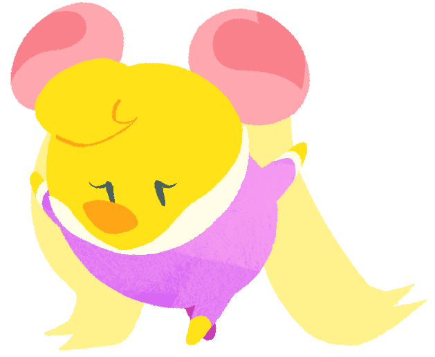

Tenko (Female)The youngest of 10 siblings, she is a self-proclaimed "princess" magician best known for her sumptuous magic tricks. She's hard-nosed and easily irritated whenever anyone (especially Kururin) doesn't understand her. She appears to have a crush on Hikarin in the credits of Kururin Paradise. In Kururin Squash!, she is the second shopkeeper. |
 |